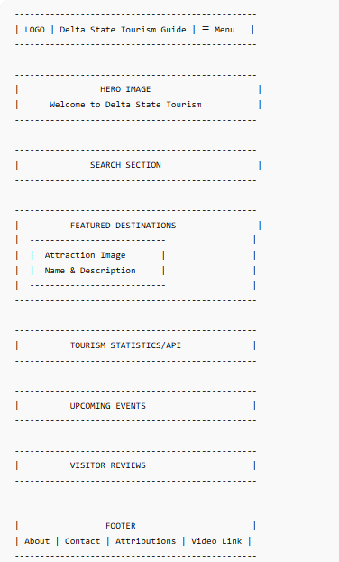
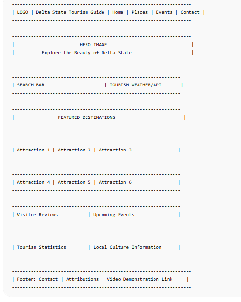

Site Name
AgroMarket Hub
AgroMarket Hub was selected because it represents a central marketplace where farmers, agricultural suppliers, and buyers can connect. The name emphasizes accessibility, networking, agricultural trade, and information sharing.
Suggested domain: www.agromarkethub.org
Site Purpose
AgroMarket Hub is an agricultural information and marketplace platform that connects farmers, suppliers, and consumers.
The website will provide:
- Listings of agricultural products.
- Market price information.
- Farmer and supplier directories.
- Educational farming resources.
- Agricultural news and updates.
- Contact and inquiry forms.
Scenarios
- What are the current market prices of maize, cassava, and yam in my region?
- How can I contact trusted agricultural suppliers near me?
- What farming practices can improve crop yield?
- Which agricultural products are currently available for purchase?
Color Scheme
#2E7D32
Primary Color
Headers, Navigation,
Buttons
#F9A825
Secondary Color
Accents and Highlights
#F5F5F5
Background Color
Typography
Poppins
Used for headings, navigation, buttons, and major page titles.
Open Sans
Used for paragraphs, forms, cards, and general website content.
Wireframes
Mobile View

Desktop View
